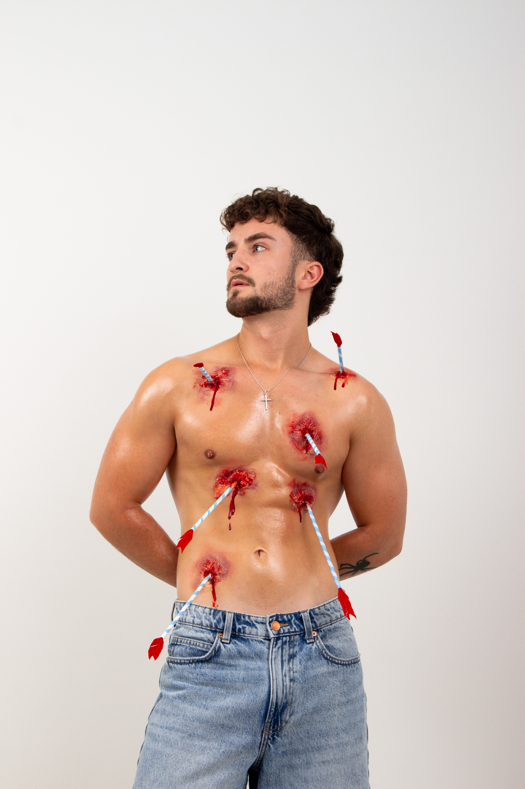
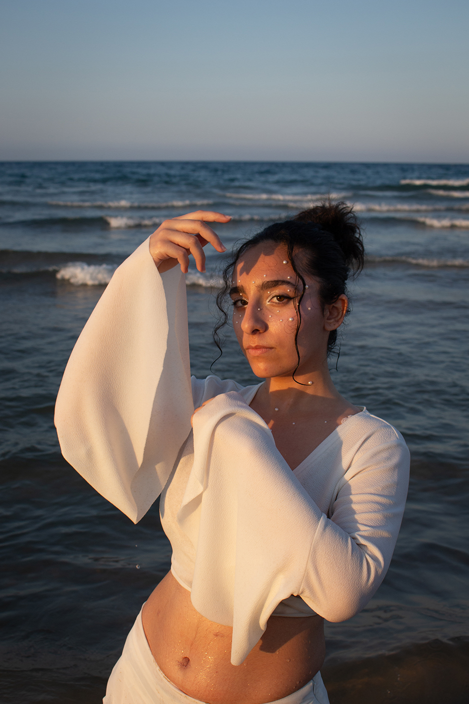
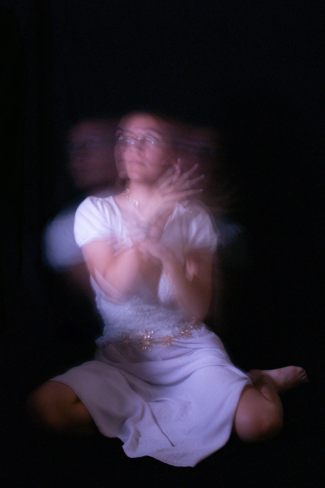

Fragmentos de Luz
Fragmentos de Luz es un proyecto fotográfico que nace del deseo de explorar distintas técnicas, estilos y emociones dentro de una misma obra. Cada imagen es un relato propio, un instante detenido que revela una forma única de expresión visual. En conjunto, estas fotografías forman un recorrido artístico donde cada fragmento ilumina una historia diferente.


